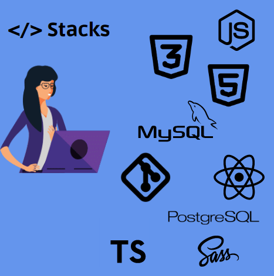

Sou apaixonada com a área de desenvolvimento e estou sempre em busca de novos conhecimentos. Estudo diariamente tecnologias como HTML, CSS, JavaScript, Typescript, ReactJS e NodeJS. Seguindo em constante atualização, buscando novos desafios e me aperfeiçoando cada dia mais com as novas ferramentas do mercado. Meu objetivo é crescer e me desenvolver cada dia mais para alcançar o sonho de me tornar uma programadora de excelência.
Manutenção de computadores: formatação, instalação de software, diagnóstico de problemas na rede e suporte aos usuários.